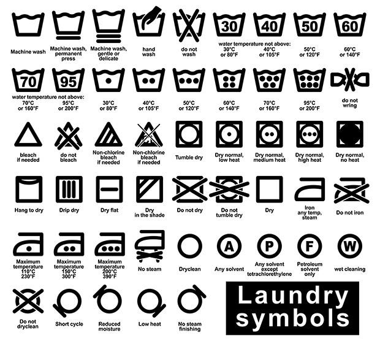

Olet työstänyt sitä tarpeeksi kauan, on vihdoin aika oppia pesemään pyykkiä. Saatat pelätä, että kun avaat pesukoneen, löydät valkoisen paidan, joka on nyt vaaleanpunainen, tai suuren t-paidan, joka muuttuu pieneksi yhden kuivausrummun jälkeen. Älä huoli. Washun Laundry Systems on täällä auttamassa sinua pyykinpesussa muutamalla helpolla vaiheella.
Vältä riskiä, että valkoiset paidat muuttuvat vaaleanpunaisiksi erottelemalla vaatteet oikein eri pinoihin – vaaleisiin, tummiin ja herkkiin.
Valot voivat olla mitä tahansa valkoisista vaatteista pastellisävyihin.
• Tummat on erotettava valoista, koska niillä on taipumus vuotaa värejä.
•Hienot ovat kaikki pitsi-, silkki- tai satiinivaatteet.
•Provinkki: On myös fiksua erottaa vaatteet, jotka houkuttelevat ja luovat nukkaa. Nukkaa luovat collegepaidat, pyyhkeet ja flanellivaatteet, kun taas nukkaa houkuttelevat yleensä nailonpuserot ja mikrokuidut, kuten miesten ja naisten urheiluvaatteet.
Vaatteet on myös fiksua valmistella ennen niiden heittämistä pesukoneeseen kuivausrummussa – muista avata paidan ja housun napit, avata hihansuut ja solmia kiristysnauhat, jotta ne eivät takerru pesukoneeseen tai kuivausrumpuun.
Selvä, selvisit vaatteiden erottamisen ohi – se voi olla tuskaa – ja nyt pesuun. Tärkeintä on muistaa, ettei pesukonetta saa ylikuormittaa – täytä noin 80 prosenttia vaatteillasi.
•Kevyet vaatteet tulee pestä kuumalla vedellä – tämä sisältää myös erittäin likaiset vaatteet bakteerien poistamiseksi.
•Tummat vaatteet tulee pestä kylmällä vedellä värin vuotamisen välttämiseksi.
•Voit myös käyttää kylmää vettä herkän tai hellävaraisen pesun ohella arkojen pesujen puhdistamiseen.
Ensimmäinen asia, joka sinun on ehdottomasti tehtävä ennen vaatteiden asettamista kuivausrumpuun, on irrottaa ja puhdistaa nukkaverkko. Likainen nukkaverkko on palovaara ja vaikuttaa kuivaimen suorituskykyyn. Lisää seuraavaksi muutama esine kerrallaan, jotta vaatteet eivät paakkuunnu kuivausrummussa aiheuttaen ryppyjä. Tarkista vaatteidesi etiketistä suositeltu kuivausasetus. Jakson päätyttyä on tärkeää taittaa tai ripustaa vaatteet nopeasti välttääksesi ryppyjä.
Kaikissa vaatteissa, pyyhkeissä, liinoja ja kaikissa muissa vaatteissa on tarra, jossa on pesuohjeet, joita voit seurata. Mutta säännöt eivät todellakaan ole kiveen hakatut. On kuitenkin hyödyllistä tietää, kuinka ainakin etiketti luetaan. Tässä on hyödyllinen opas, jossa kerrotaan yksityiskohtaisesti kaikista eri symboleista, joita näet tarrassa. Kaikilla vaatteilla, pyyhkeillä, kankailla ja kaikissa muissa vaatteissa on etiketti, jossa on pesuohjeet, joita voit seurata. Mutta säännöt eivät todellakaan ole kiveen hakatut. On kuitenkin hyödyllistä tietää, kuinka ainakin etiketti luetaan. Tässä on hyödyllinen opas, joka sisältää yksityiskohtaisesti kaikki tarrassa näkyvät symbolit.

 EN
EN  ES
ES PT
PT AR
AR RU
RU FR
FR